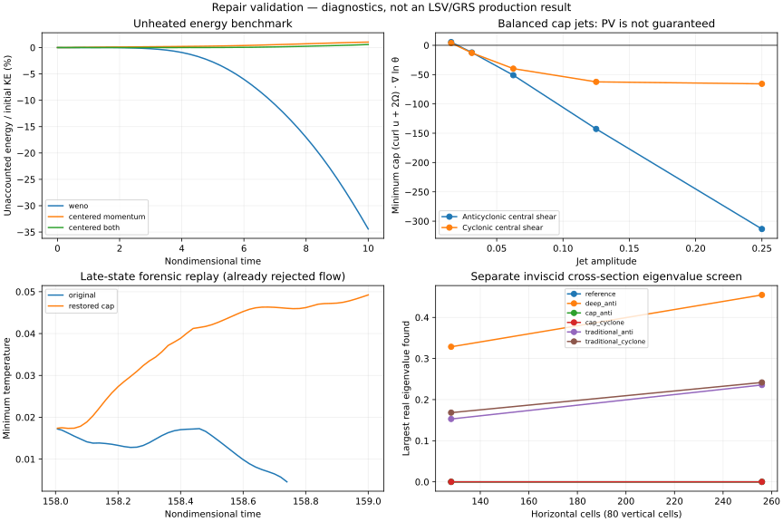

← Gallery · Original shear-pilot diagnosis
Repairing the shear experiment before another long run
Bounded validation, not an LSV or GRS result. These tests separate thermal-control errors, discrete energy loss, thermodynamic positivity, and jet stability. No long production integration was released. All computation and rendering took place on Unity; existing simulations and shared dependencies were left unchanged.

1. Thermal controls and live stopping criteria
Bottom flux, interior conduction, top conductive heat exchange, cap temperature restoration, and entropy diffusion now have independent controls. Conductivity no longer changes when bottom flux is switched off. Each external thermal term was tested separately against its boundary/volume energy input; the largest absolute discrepancy was 6.94×10⁻¹⁸. Closed-boundary entropy transport sums to roundoff zero. The conversion between heat input and the potential-temperature tendency also passed its chain-rule check.
The same guard function now controls runtime and saved-output acceptance: positive finite density, pressure, temperature and density × potential temperature; Mach below 0.5; minimum temperature above 0.5; mean temperature-profile drift below 5%; bounded potential-temperature departure; and relative mass error below 10⁻⁷. Ten synthetic failures verified the stop conditions. Actual CPU and GPU driver tests advanced the model, exercised diagnostics, saved/read fields, and restarted with matching prognostic fields.
2. Energy loss: a practical improvement without invented heating
Three unheated 24×48×40 benchmarks start from identical balanced mixed-sign eddies with initial RMS velocity 0.1. They retain ordinary configured SGS viscosity and its viscous heating, but disable entropy diffusion and all external heating. The channel is 4×8×1, Ω=3, with the existing beta and tilted rotation. Each reaches nondimensional t=10.
| Transport scheme | Total-energy change / initial kinetic energy at t=10 |
|---|---|
| Original WENO momentum and thermodynamics | −34.42% |
| Centered momentum; WENO thermodynamics | +1.04% |
| Centered momentum and thermodynamics | +0.58% |
The fully centered option passes the 1%-of-initial-KE threshold for this short benchmark. No residual was returned as an arbitrary heating source, and no temperature clipping was introduced. It is a candidate numerical repair, not an exactly conservative formulation or a long-run validation. At its final state, Coriolis interpolation accounts for 0.01662 of the 0.01721 total spurious energy rate; pressure/thermodynamic and viscous mismatches are much smaller. This remaining term needs attention before a long precision budget study.
The earlier heated Ω=3 run was checked independently at its saved t=800 state, using its original periodic geometry and forcing. Native operators predict dE/dt=0.409120 versus the recorded 0.409059, a 0.015% difference. Its spurious loss is 0.08741, or 17.48% of the imposed bottom heating power. Momentum-transport loss is again dominant. This is an instantaneous audit at one saved state, not a fully integrated attribution for every older run. It supports treating the earlier thermal/energy residual as a numerical effect when interpreting those vortices.
Watch the fully centered energy benchmark
Watch the original WENO benchmark
Watch centered momentum with WENO thermodynamics
3. Thermodynamic failure replay
Restarting the saved t=158 state without cap restoration reproduces the first negative ρθ at t=158.7517, in the top cell (Julia indices 85, 202, 80). Stage logging now distinguishes the operators: the slow tendency is −0.302233, consisting of −0.279403 entropy-diffusion heating, −0.0235935 thermodynamic advection, and +0.0007638 viscous heating. Their sum matches the recorded native tendency exactly.
The outer-step initial ρθ was 0.00052243. The final Runge–Kutta stage adds −0.00176287 from the slow tendency and only +0.00000247 from the acoustic remainder, producing −0.00123797. Thus explicit entropy-diffusion heating dominates the immediate positivity loss. A limiter applied only to WENO transport would miss the principal contribution. The source update/timestep needs positivity-aware treatment; no new clipping or limiter was installed in these tests.
With cap restoration switched on and everything else in the replay unchanged, the run reaches t=159 without a positivity failure. This is a short causal intervention, not evidence that the already-depleted late state is suitable for continued production.
These forensic replays deliberately start from an already rejected late state, using relaxed diagnostic limits solely to capture the failure. They do not pass the normal Mach/temperature/profile acceptance criteria. Restoring the cap at t=158 is not equivalent to running the corrected setup from the beginning.
4. A cap does not automatically make a strong jet admissible
The candidate jet fades from zero at z/H=0.82 to its full horizontal profile at 0.96, with zero vertical derivative at both lids. Pressure and density are balanced with the full compressible thermal-wind relation and native vertical pressure/gravity balance. Both central shear signs were screened at amplitudes 0.25, 0.125, 0.0625, 0.03125 and 0.015625.
All amplitudes from 0.03125 upward fail the cap PV screen. Localizing a strong jet introduces vertical shear and substantial changes to the balanced stratification. The original amplitude 0.25 was rejected before integration. At 0.015625, both signs have positive cap PV, including on the twice-finer y/z grid. This surviving candidate is sixteen times weaker than the original jet; it has not been shown capable of holding an LSV in place.
All four jet-only tests were stopped by the shared 5% mean temperature-profile drift guard before the target t=30. They retain viscosity, entropy diffusion, cap restoration, and conductive thermal control, with no bottom heat flux. The cap jets use amplitude 0.015625; the depth-independent controls use 0.25 and remove only horizontal rotation, retaining f₀ and beta. These are 8×128×80 x-uniform sections.
| Case | Guard-stop time | Reason |
|---|---|---|
| traditional anticyclonic | 22.150 | 5% temperature-profile drift |
| cap cyclonic | 20.994 | 5% temperature-profile drift |
| traditional cyclonic | 16.236 | 5% temperature-profile drift |
| cap anticyclonic | 29.644 | 5% temperature-profile drift |
None passes the intended profile-holding test. This is a failure to establish a sufficiently stationary thermal background, not a numerical NaN crash. The movies end at the last saved valid frame before each guard stop. Restoring the cap prevents one failure mechanism but does not make the existing entropy-mixing/jet/thermal-control combination an equilibrium.
The weak cap movies also develop fine striped adjustments; these are not an established vortex or evidence of a resolved stable jet. These short profile tests retain the original WENO transport. They validate thermal behavior separately from the centered-transport benchmark; they do not validate a combined replacement production configuration.
Weak cap jet: anticyclonic central shear
Weak cap jet: cyclonic central shear
Depth-independent jet: horizontal rotation removed, anticyclonic central shear
Depth-independent jet: horizontal rotation removed, cyclonic central shear
What the linear screen does and does not establish
A separate x-uniform, inviscid, adiabatic compressible Euler eigenvalue calculation uses the balanced cross-sections. It passes uniform acoustic/inertial-wave and closed-boundary mass tests. It is not the Jacobian of the forced WENO/SGS time stepper. The original tilted deep jet has growing modes: the largest real rates found rise from 0.329 to 0.455 when horizontal resolution increases from 128 to 256 cells at 80 vertical cells. Coarser horizontal grids substantially miss this instability.
No comparable growing mode was found for the weak cap candidates in this search. However, the depth-independent horizontal-rotation-off controls also show growth on fine horizontal grids, and rates are not converged. Small reference-state/eigenpair errors remain. Consequently this screen does not certify full stability or supply a production release. It identifies where further numerical verification is necessary. Complex rotation-axis-aligned jets and additional tilt experiments remain deferred.
Movie conventions and evidence
All movies show actual saved vorticity above passive tracer at three depths, with common time stamps. Vorticity is ζ/f₀, with positive sign cyclonic; each movie uses fixed full-range per-depth asinh limits, width 0.002. Limits can differ between movies. Tracer uses a fixed absolute range 0–1 with asinh width 0.01. Axes are stretched for readability, especially for the narrow x-uniform profile tests; these are not images of resolved 3D LSV formation.
Aggregate diagnostics and validation · Earlier heated-state energy audit · Movie scales, durations and hashes · Energy/replay source · Jet-profile source · Linear-screen source
Unity jobs: validation 2140442 and 2140558; energy/static screens 2140541; failure replay 2140542; profile tests 2140644; refined linear screen 2140690; older heated-state audit 2140833; analysis 2141086; final readable-colorbar rendering 2141212. Raw fields remain on Unity.